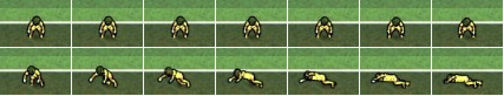
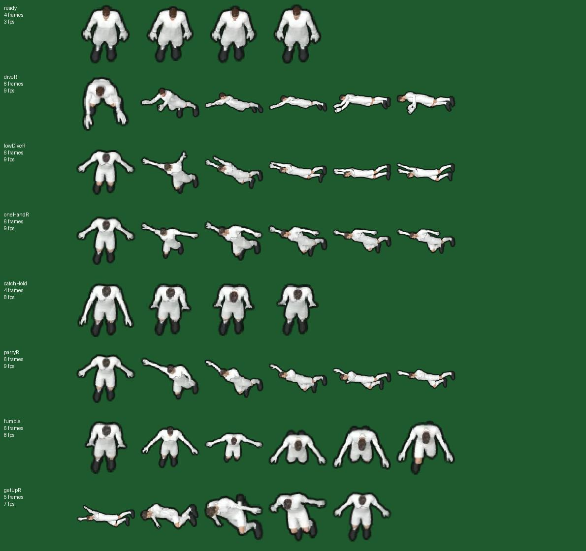

A plan for you to look at and comment on. Nothing is built yet. Nothing changes in the game until you say go.
Made by Leo · 26 Oct 2026, 22:08 UK time
“Make it so the goalie actually catches the ball … ball should go in his hands and move with the goalie if he dives … dive more realistic and fall on floor and if he gets up get up … better animations, better graphics, ball should look fitting.”
When he catches it, the ball stops where it met him and stays there. He slides to it in one dive pose and lies still; the match cuts away before he gets up. On a dive, the ball is pushed away before his dive even starts. In 3D he gets up, then dives a second time at nothing.
Drawing, from the side. What a diving catch looks like today. Red = what is wrong.
Look forthe ball stops dead where it meets him, then he slides under it in one pose and lies still.
Look forthe ball is pushed away while he is still standing; he dives after it has gone.
Look forhe gets up, then about 2 s later dives a second time at nothing.


When he catches it, the ball goes into his gloves and moves with his hands through the dive, the landing and getting up. Then he holds it and the play moves on, as now. To do that, every new drawing records where his gloves are, so the game can put the ball exactly there in each frame.
Drawing, from the side. The diving catch, planned: set, push off, ball in his gloves in the air, lands on his side with it tucked in, up onto a knee, stands holding it.
The dive becomes one move from start to finish: he pushes off his leg, flies, lands on his side with a bump and a puff off the grass, lies for a moment, then gets up (rolls onto a knee, stands). No more sliding along in one pose, and no snap from lying to walking. The dive starts in time, so his hands reach the ball as it arrives (today the ball is pushed away before he moves), and no second dive after he gets up (3D).
The ball gets the same light and shade as the players: a soft shadow on the grass that follows it into his hands, the right size next to his gloves, and a small squash when it hits his gloves. His drawings are made at twice the detail (sharper edges), and his shadow stretches as he dives.
The 2D match, the 3D view (the ball sits in the 3D keeper’s hands) and the goal videos and highlights all use it, because they all draw the same keeper.
A new part on your card: “Keeper catches and dives” (Settings → Updates → Leo’s update). Off = exactly as now. Saves and goals don’t change: only how it is drawn. The match tests prove the same results, and every new clip is checked so no body part goes through another (Brain RUL-3D-005).
The keeper’s drawing and the 3D keeper are Harry’s. This only adds to the drawing, behind your switch; nothing in the match maths changes.
The test machine has no graphics chip, so 3D is very slow here. The 2D and the goal videos can be filmed properly; the 3D part needs a quick look on a phone.
Today: 14 keeper moves, 4 to 6 drawings each, 7 to 9 drawings a second; 0 drawings with a ball or hand position. Planned: about 18 drawings per move at 24 a second, each with the glove position; drawn at 2× size.